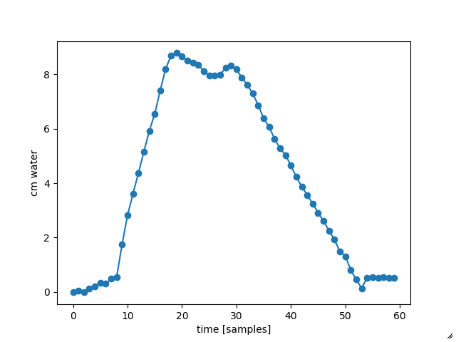
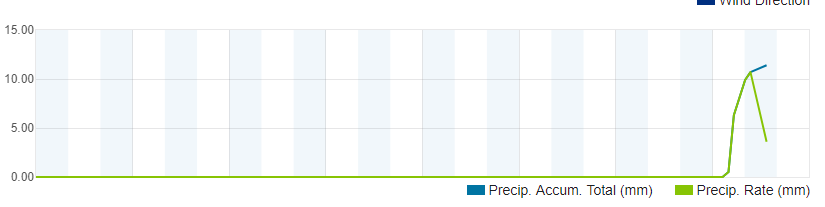

Waarnemingen
Laatst bijgewerkt 5-Augustus 2017, SM
Onderdeel van: Hemelwater_Afvoer.html
Toekomst Voor de toekomst is voorzien om het waterpeil in beide buffers continue te monitoren via een draadloos IOT (Internet Of Things) device. Hierbij wordt de druk in de buis gemeten met een barometrische sensor, waarna de waterhoogte berekend wordt door de druk van het weerstation af te trekken. Zodra dit gebwoud is, zullen we het ook publiceren.
Tijdens de aanleg zijn in beide buffers 32mm PVC buizen gestoken die tot op de bodem van de kratten komen en boven het maaiveld nog moeten worden afgewerkt. | 
|
Eerste waarneming, 5 aug 2017
Nadat de hemelwaterafvoer gereed was, kwam op 5 augustus 2017 de eerste forse regenbui.
In 40 minuten viel 7 mm regen, gemeten met een WS 3000 weerstation (en overeenkomend met wat we in de diverse emmers zagen. De rode lijn is de regenval in mm (uit te lezen op de linker schaal).

We hebben 2 metingen verricht, om 13:50 uur en om 14:30 uur.
Zowel aan de voorkant als aan de achterkant van het huis hebben de kratten een 50 keer kleinere oppervlakte dan het regenwater vangende oppervlakte. De verwachting is dat we dus 50 * 7 mm = 350 mm = 35 cm in de kratten vinden. De metingen (voor zowel voor als achterkant van het huis):
Conclusie, het water wordt dus razendsnel afgevoerd.
De meting is uitgevoerd met een doorzichtig slangetje met een binnendiamter van 5 mm. Het slangetje wordt helemaal tot onder in de krat gebracht, dan dichtgeknepen en voorzichtig naar boven gehaald. Het slangetje is eerst getest in een emmer water, waarbij blijkt dat het nivo ongeveer 1 cm zakt als gevolg van het dichtknijpen.
Created with Microsoft Office OneNote 2007
One place for all your notes and information